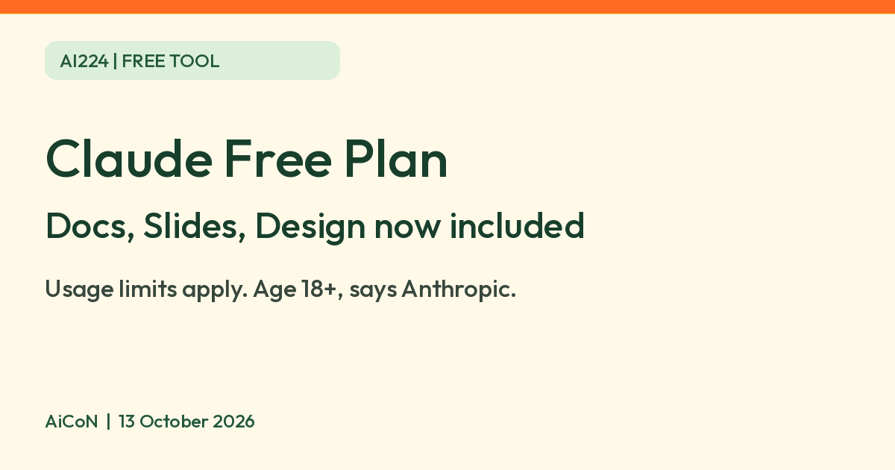

Claude Docs, Slides and Design are now on the Free plan: what to know
Anthropic says Claude Docs, Slides and Design are now on every Claude plan, including Free. Usage limits apply, you must be at least 18, and Dashboards and Motion are not free. Check the data setting.

Official Claude icon
What changed
On 8 October 2026 Anthropic said Claude Docs, Claude Slides and Claude Design are out of beta and "available on every plan, including Free". They are templates inside Claude chats: ask for a document, a slide deck or a design, and Claude builds it in a panel next to the chat that you can edit by hand or by asking Claude.
Is it free?
Yes, on the Free plan, with limits. Anthropic's pages say Docs, Slides and Design are on all plans including Free. Claude Dashboards (beta) is on paid plans only, and Claude Motion (beta) is on Team and Enterprise only, so those two are not free.
The limits
- Anthropic's help page says Claude Docs "counts toward your plan's usage limits", and larger requests use more of your limit. We did not find the exact Free plan allowance on the pages we read.
- Artifacts need "Cloud code execution and file creation" switched on in Settings > Capabilities for Free, Pro and Max plans.
- A promotion runs from 1 to 15 October 2026; Free plans joined on 7 October. In chats, the next 10 messages after an artifact is created or edited use 50% less of the five-hour session limit, with only the first 15 steps of each reply discounted. The first artifact-creation message in a regular chat is not discounted. Starting from the Output menu applies the discount from the first message. This does not reduce weekly usage or charges for usage credits, and excludes Claude Code, API, standalone Design and other listed cases. Check the promotion page for all exclusions.
What you can do with what you make
- Export: Docs go to Word, PDF, Markdown and Google Docs. Decks go to PowerPoint, PDF or Google Slides. Designs go out as a zip, PDF, PowerPoint or standalone HTML.
- Share: on Free, Pro and Max plans you can share with anyone who has the link. Docs start private. Opening a shared doc needs a Claude account.
- Delete: deleting a doc is permanent, says Anthropic. There is no trash.
Who can use it, and India
- Age: Anthropic requires you to be at least 18.
- India: Anthropic's supported countries list includes India.
- Standalone Claude Design (claude.ai/design) stays up until 14 December 2026. Chats and comments will be unavailable after closure, and public project links stop working then, says Anthropic.
Privacy and data
- For Free, Pro and Max, Anthropic says it uses your chats to improve its models if you allow it in your privacy settings, if a chat is flagged for safety review, or if you join a programme such as its Trusted Tester Program.
- Incognito chats are not used to improve Claude, even if the setting is on.
- Feedback is separate: Anthropic says thumbs-up/down feedback stores the related conversation for up to five years and may be used for model training.
- The cited model-training page does not state the setting's default. AiCoN advice: open Settings > Privacy and check the model improvement setting before you paste in work you care about.
Frequently asked questions
Are Claude Docs, Slides and Design free?
Yes on the Free plan, within usage limits, per Anthropic.
Is Claude Dashboards free?
No. Anthropic lists it as a beta on paid plans.
Can under-18s use it?
No. Anthropic says users must be at least 18.
How to start
- Sign in to Claude. Check Settings > Capabilities for Cloud code execution and file creation.
- Choose Docs, Slides or Design from the Output menu or the Artifacts tab. Describe the audience, purpose, length and source material.
- Edit the result directly or ask for changes. Check every fact and number before sharing.
- Choose Export for the format you need. Keep the artifact private unless you mean to share it, and review who can open the link.
What changed since this post?
Official sources rechecked on 13 October 2026. Docs, Slides and Design are included on Free, but Dashboards and Motion are not. Exact Free allowance was not found. The artifact promotion ends on 15 October and is not a permanent increase in limits. India remains listed as supported. The model-improvement default is not stated in the cited page; check your settings. No Free-plan creation, export or sharing flow was tested by AiCoN.
Sources: Anthropic announcement, 8 October 2026, Claude Artifacts, Get started with Claude Docs, What are artifacts, Artifact usage promotion, Minimum age requirement, Supported countries, Is my data used for model training. Checked 13 October 2026.